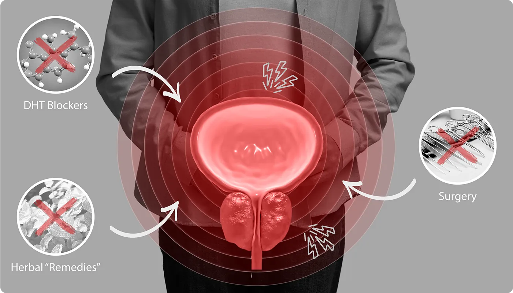
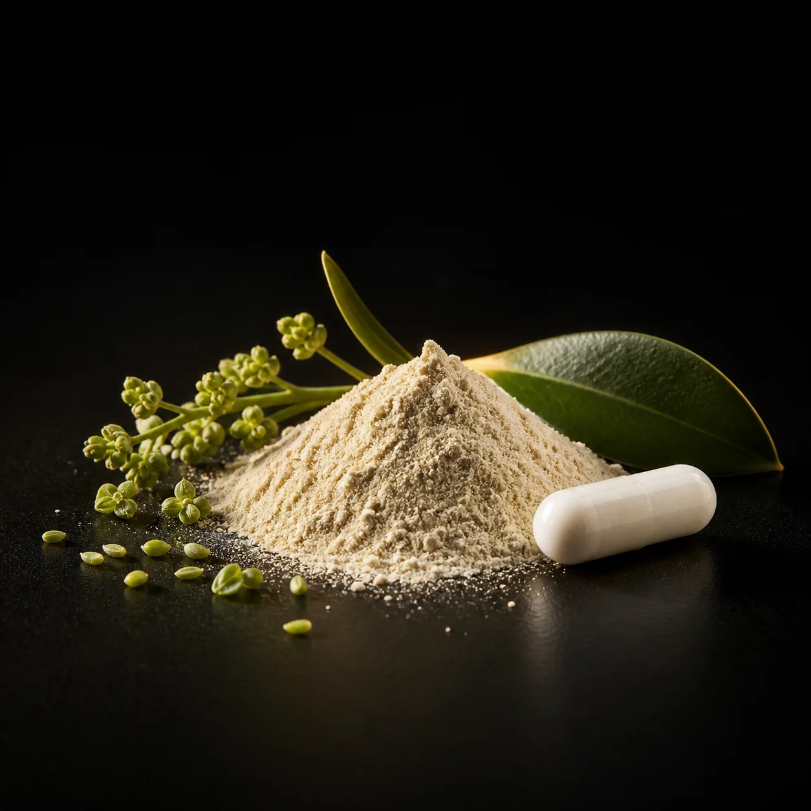

“Volví a descansar con más tranquilidad y a sentirme cómodo en mi rutina.”
Patricio Gutiérrez · Compra verificadaMÁS ELEGIDO
FÓRMULA DIARIA DE LIFEMED
Tu próstata no debería controlar tus noches, tu baño ni tu rutina
Deja de resignarte al flujo débil, la urgencia y las noches interrumpidas. Prosavix reúne siete activos declarados para acompañar el confort urinario y ayudarte a recuperar el control de tu día.
- ✓Acompaña flujo, vaciado y confort urinario
- ✓7 activos concentrados en una cápsula diaria
- ✓Compra protegida durante 180 días
Elige tu presentaciónEntrega en Colombia
Total$198.000 COP
Ahorras $99.000 con el kit de 3 frascos3 frascos listos para continuar al checkout.
🔒 Compra segura🚚 Envío gratis📦 Paga al recibir
SALUD MASCULINA
“No normalices una señal que ya está cambiando tu descanso y tu rutina.”
CONOCE AL ESPECIALISTA
Dr. Juan Rivera
Médico internista y cardiólogo · Educador y comunicador de salud
Formación en Johns HopkinsPrevención y bienestar integralComunicación para la comunidad hispana
“La mayoría intenta apagar una señal. El bienestar masculino exige observar el sistema completo.”
Flujo débil, urgencia, sensación de vaciado incompleto y descanso interrumpido no se viven por separado: juntos pueden quitarte energía, confianza y libertad durante el día.
Una rutina simple y constante permite acompañar varios frentes sin depender de soluciones improvisadas. Prosavix organiza siete activos declarados en una sola cápsula diaria.
✓ Reconoce las señales✓ Acompaña varios frentes✓ Construye constancia
Dr. Juan RiveraPresentación educativa de salud y bienestar
Perfil y contenido de carácter informativo. Esta sección no constituye diagnóstico, prescripción ni recomendación médica individual.
LO QUE DEBES ENTENDER
Por qué muchos tratamientos se quedan a mitad
Durante años, muchos hombres han sentido que sus únicas opciones son medicamentos, remedios herbales aislados o cirugía. Cada alternativa tiene un propósito, pero ninguna debería elegirse sin entender su alcance, sus límites y sus posibles efectos.

NO EXISTE UNA RESPUESTA ÚNICA
Aliviar una señal no siempre significa acompañar toda tu rutina
El flujo débil, la urgencia, el vaciado incompleto y las noches interrumpidas pueden exigir una mirada más amplia. La decisión correcta depende de cada caso y debe separar el tratamiento médico de una rutina diaria de bienestar.
Bloqueadores de DHT
Alivio que requiere seguimiento médicoMedicamentos como finasterida o dutasterida pueden ser indicados para determinados pacientes. También pueden producir efectos adversos, incluso en la función sexual, por lo que su uso exige evaluación y seguimiento profesional.
Remedios herbales aislados
Un solo ingrediente puede quedarse cortoActivos como Saw Palmetto suelen usarse en rutinas de bienestar urinario, pero la respuesta puede variar. Por eso Prosavix no depende de un único extracto: organiza siete activos en tres frentes complementarios.
Cirugía
Una decisión médica para casos específicosLos procedimientos pueden ser necesarios cuando un especialista los considera adecuados. Como toda intervención, implican beneficios y riesgos que deben discutirse con un urólogo; no son una rutina diaria de bienestar.
ENTIENDE EL CICLO
Una noche interrumpida no termina cuando sale el sol
La incomodidad puede convertirse en un patrón que afecta descanso, energía y confianza. Por eso una rutina completa debe mirar más de un frente.
Tu atención vuelve una y otra vez al baño.
Las interrupciones dificultan una noche continua.
El cansancio se refleja en el resto del día.
Tu rutina empieza a organizarse alrededor del problema.
Romper el patrón comienza con una rutina que puedas mantener todos los días.VER CÓMO ACTÚA PROSAVIX →
LA SOLUCIÓN: PROSAVIX
7 activos. 3 frentes. 1 cápsula al día.
Una fórmula pensada para dejar atrás la improvisación y construir una rutina masculina simple, clara y constante.
Apoyo botánico
Saw Palmetto, Pygeum y raíz de urtiga.
Confort urinario
Activos que acompañan flujo y vaciado.
Soporte nutricional
Zinc, selenio y vitamina D3.
CÓMO ENCAJA EN TU RUTINA
Tres frentes que trabajan juntos, sin complicar tu día
Combina extractos vegetales
Saw Palmetto, Pygeum y raíz de urtiga forman la base botánica de la rutina.
Acompaña flujo y vaciado
Beta-sitosterol y Pygeum complementan el enfoque diario de bienestar urinario.
Completa la fórmula
Zinc, selenio y vitamina D3 agregan soporte nutricional y antioxidante.
180DÍASde garantía
Empieza una rutina que puedas mantener
★★★★★
RESULTADOS COMPARTIDOS
La tranquilidad de volver a sentir control sobre tu rutina
Calificación 4,8 basada en 1.178 opiniones informadas por la marca. Las experiencias son individuales.
Patricio GutiérrezCompra verificada
★★★★★
“Volví a descansar mejor”
“Antes mi sueño se interrumpía varias veces. Con la rutina de Prosavix empecé a sentir noches más tranquilas y más energía al despertar.”
Experiencia individual · Resultados pueden variarJuan PérezCompra verificada
★★★★★
“Me siento renovado”
“Había probado otras opciones sin mantener una rutina. Prosavix fue sencillo de usar y hoy me siento mucho más confiado en mi día a día.”
Experiencia individual · Resultados pueden variarFernando GómezCompra verificada
★★★★★
“Menos preocupación por la noche”
“Lo que más valoro es haber recuperado una sensación de tranquilidad. Ya no organizo toda mi noche pensando en las interrupciones.”
Experiencia individual · Resultados pueden variarLuis GarcíaCompra verificada
★★★★★
“Una rutina fácil de seguir”
“Una cápsula diaria fue fácil de incorporar. La fórmula está clara y eso me dio más confianza para mantener la constancia.”
Experiencia individual · Resultados pueden variarSofía MárquezCompra verificada
★★★★★
“Mi esposo está más tranquilo”
“Al principio éramos escépticos. Después de incorporar Prosavix a la rutina, notamos cambios positivos en su descanso y disposición.”
Experiencia individual · Resultados pueden variar★★★★★
DENTRO DE PROSAVIX
Siete activos declarados. Nada escondido en la fórmula.
Cada frasco contiene 30 cápsulas. La dosis diaria informada es de una cápsula.
Saw Palmetto 320 mg
APOYO BOTÁNICOActivo vegetal tradicionalmente utilizado en rutinas de bienestar prostático.

Beta-sitosterol 200 mg
CONFORT URINARIOFitoesterol incorporado para acompañar el flujo y el vaciado urinario.
Pygeum africanum 100 mg
CONFORT URINARIOExtracto vegetal usado como apoyo al confort del tejido prostático.
Urtiga (raíz) 300 mg
APOYO BOTÁNICOComplementa los extractos vegetales dentro de la fórmula diaria.
Zinc 15 mg
SOPORTE NUTRICIONALMineral esencial para funciones normales del organismo y soporte masculino.
Selenio 100 mcg
DEFENSA ANTIOXIDANTEContribuye a proteger las células frente al daño oxidativo.
Vitamina D3 2.000 UI
SOPORTE NUTRICIONALCompleta la fórmula con soporte para funciones celulares, musculares e inmunológicas normales.
MEJOR VALOR
★★★★★ 4,8 · 1.178 opiniones
ELIGE TU RUTINA
Tu decisión de hoy puede cambiar cómo vives los próximos 30 o 90 días
- ✓Una cápsula diaria30 cápsulas por frasco
- ✓Envío gratis y pago al recibirEntrega disponible en Colombia
- ✓Garantía comercial de 180 díasCompra protegida según las condiciones aplicables
Kit de 3 frascos$198.000 COP
Por frasco$66.000
AHORRAS $99.000Sin suscripción · Envío gratis · Paga al recibir
★★★★★
RESUELVE TUS DUDAS
Preguntas frecuentes
Todo lo que necesitas saber antes de elegir tu presentación.
01¿Qué hace diferente a Prosavix?+
Reúne siete activos declarados en una sola cápsula diaria, combinando apoyo botánico, confort urinario y soporte nutricional.
02¿Cómo debo tomarlo?+
La dosis diaria informada es de una cápsula. Lee la etiqueta y sigue sus indicaciones.
03¿Cuánto dura cada frasco?+
Cada frasco contiene 30 cápsulas, equivalentes a una rutina de 30 días.
04¿Puedo usarlo si tomo medicamentos?+
Consulta a un profesional de salud si utilizas medicamentos, tienes una condición diagnosticada o realizas un tratamiento.
05¿Cómo recibo y pago mi pedido?+
La entrega se realiza en Colombia, con envío gratis y pago contra entrega según cobertura.
06¿Cómo funciona la garantía de 180 días?+
Conserva la confirmación de compra y contacta al soporte dentro del plazo para conocer las condiciones aplicables.